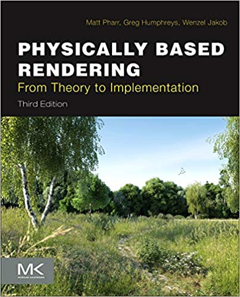
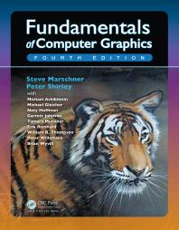

|  |
Matt Pharr, Greg Humphreys & Wenzel Jakob,
Physically Based Rendering (Third edition)The book is currently freely available online. |
 |
Peter Shirley, Trevor David Black & Steve Hollasch,
Ray tracing in one weekendThe book is currently freely available online. |
|  |
Steve Marschner & Peter Shirley
Fundamentals of Computer GraphicsThe book is available for free online access in our library. |
Other resources
- Tutorials on Blender
- Introduction to computer graphics by Steve Marschner, Cornell University.